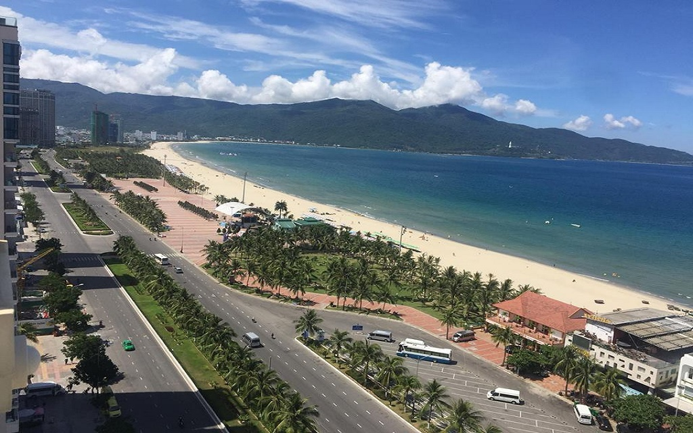
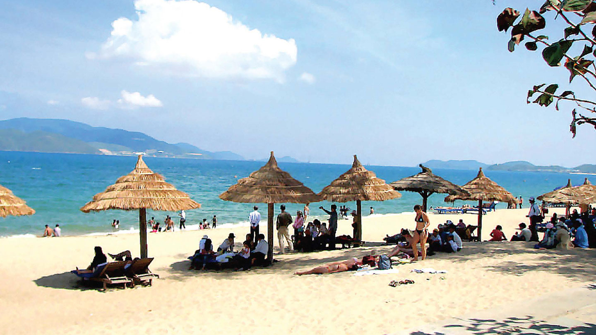
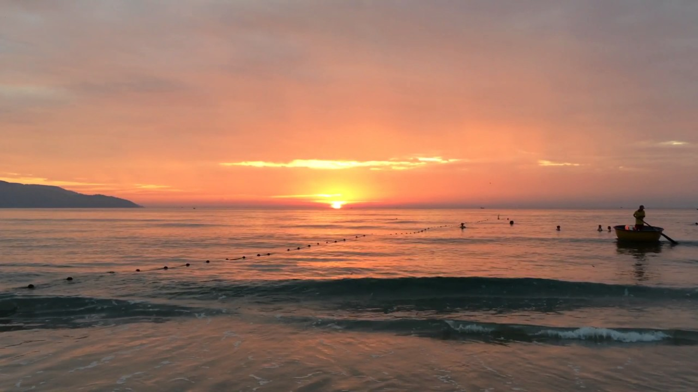
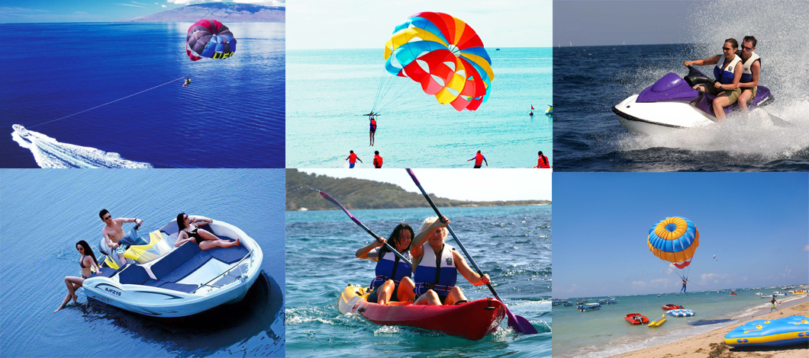

Biển Mỹ Khê
Địa Điểm Du Lịch Tâm Linh
Bãi biển Mỹ Khê Đà Nẵng đã trở thành một trong những “dấu ấn riêng” cho thành phố biển Đà Nẵng. Với vẻ hoang sơ và quyến rũ, Mỹ Khê đã trở thành một điểm đến gây “sốt” cho khách du lịch trong suốt thời gian qua. Và cho đến nay, “cơn sốt” đó vẫn chưa có dấu hiệu dừng lại. Mỹ Khê – một điểm đến ấn tượng không chỉ riêng thu hút sự chú ý của du khách trong nước mà còn có du khách quốc tế. Biển Mỹ Khê từng lọt vào “top” 6 bãi biển đẹp và quyến rũ nhất hành tinh do tạp chí uy tín Forbes bình chọn và nằm trong “top” 10 bãi biển châu Á được yêu thích nhất thế giới do tờ Sunday Herald Sun của Australia bình chọn. Vì vậy không có gì quá ngạc nhiên khi Mỹ Khê trở thành một trong những địa điểm du lịch Đà Nẵng ưa thích hút khách nhất.
Bãi biển Mỹ Khê có vị trí cực kì thuận lợi chỉ cách trung tâm thành phố khoảng 3km về phía Đông. Vì vậy du khách có thể di chuyển dễ dàng đến Mỹ Khê bằng nhiều phương tiện khác nhau. Từ thành phố Đà Nẵng, du khách có thể lựa chọn các hình thức di chuyển như đi taxi, xe bus...
Những bờ cát trắng mịn trải dài tít tắp, dòng nước xanh trong mát rượi hiền hòa và những hàng dừa reo vui trong gió… là những hình ảnh ấn tượng khi nói về Mỹ Khê. Vẻ trong xanh và quyến rũ của biển Mỹ Khê đã làm “đốn tim” không biết bao nhiêu du khách. Ai đã từng đặt chân đến Mỹ Khê hoặc đơn thuần chỉ ngắm nhìn Mỹ Khê qua những hình ảnh tươi đẹp trên trang sách, báo… đều khát khao được một lần trải nghiệm, hòa mình vào “tiên cảnh” dịu dàng và xinh đẹp của Mỹ Khê.
Nước biển Mỹ Khê hiền hòa và trong xanh trong suốt cả năm, vì vậy du khách có thể ghé thăm vào bất kì thời điểm nào. Tuy nhiên nếu bạn là một người yêu biển và muốn chiêm ngưỡng những khung cảnh đẹp nhất của Mỹ Khê thì thời điểm phù hợp nhất vẫn là khoảng thời gian từ tháng 4 đến tháng 9 hằng năm. Bởi vào lúc này, thời tiết ở đây vô cùng lý tưởng với nền nhiệt cao, trời nhiều nắng và trong xanh, biển êm và đẹp, rất thuận lợi cho các hoạt động tắm biển hay vui chơi của du khách. Vào những tháng còn lại thời tiết Đà Nẵng sẽ có chút thay đổi, tuy nhiên chúng cũng không thể khiến Mỹ Khê bớt đẹp chút nào đâu nhé!
Với vẻ đẹp riêng theo từng mùa, du khách sẽ được chiêm ngưỡng những khung cảnh tuyệt đẹp và trải nghiệm nhiều cung bậc cảm xúc khác nhau về bãi biển đẹp nhất hành tinh này. Nhiều du khách đã chia sẻ rằng Mỹ Khê thực sự rất quyến rũ với màu nước biển xanh ngăn ngắt bốn mùa, những miền cát trắng mềm mịn thanh bình, một bầu không khí trong trẻo, dễ chịu cùng rất nhiều hoạt động vui chơi lý thú.
Ngoài ra, theo kinh nghiệm du lịch biển Đà Nẵng, vào thời điểm các dịp lễ, nhất là 30/4 – 1/5, lượng khách đổ về Mỹ Khê khá lớn. Do đó nếu không muốn phải chen chân trong tình cảnh đông đúc và có thể thoải mái chiêm ngưỡng vẻ đẹp bình yên của nơi đây bạn có thể sắp xếp du lịch vào các tháng 6, 7.
Vào thời khắc cuối ngày, khi “mặt trời xuống núi như hòn lửa” cả một vùng biển rộng lớn như được nhuộm một màu đỏ tuyệt đẹp. Những gợn sóng lăn tăn rì rào vang vọng khiến tâm hồn thật bình yên và tĩnh lặng. Dạo chơi trên bờ biển và cảm nhận những thay đổi của khoảnh khắc giao ngày chắc chắn sẽ là những trải nghiệm đáng nhớ của du khách. Bên cạnh đó, các hoạt động giải trí như câu cá, lặn ngắm san hô hay lướt ván, du thuyền và đi môtô nước… là các trò chơi rất thú vị ở bãi biển Mỹ Khê mà du khách nên trải nghiệm.
 Ngoài tắm biển, buổi chiều còn là thời điểm lý tưởng dành cho bạn để trải nghiệm các hoạt động vui chơi trên bãi biển. Trong đó các hoạt động được yêu thích nhất vẫn là lướt ván, nhảy dù, chơi bóng chuyền,.. dạo bộ hoặc chạy bộ trên bãi biển. Hơn thế chiều tối cũng là cơ hội tuyệt vời để bạn được ngắm nhìn vẻ đẹp lãng mạn và quyến rũ của hoàng hôn trên biển Mỹ Khê. Sau một ngày dài rong ruổi khắp chốn của Đà Nẵng, buổi tối hãy thử ghé biển Mỹ Khê để được tận hưởng những làn gió biển mát rượi. Hoặc bạn cũng có thể tìm một địa điểm nào đó để ngồi trên bờ biển nhâm nhi món thức uống yêu thích hay trò chuyện và hát hò cùng bạn bè của mình. Chắc chắn đây sẽ là những kỷ niệm vô cùng đáng nhớ dành cho bạn khi đến Đà Nẵng.
Không chỉ có thiên nhiên xinh đẹp, Mỹ Khê còn là nơi lý tưởng để bạn được thưởng thức những thức quà tươi ngon nhất từ biển cả.
Vậy đến Mỹ Khê bạn sẽ có cơ hội nếm thử những món như: gỏi trứng cá Chuồn, rong biển Mỹ Khê, lẩu hải sản, các món cá, tôm, mực, sò,... chế biến theo kiểu hấp, nướng, luộc,...
Chúc bạn có chuyến đi thú vị và đừng quên check in tại nơi đây nhé!